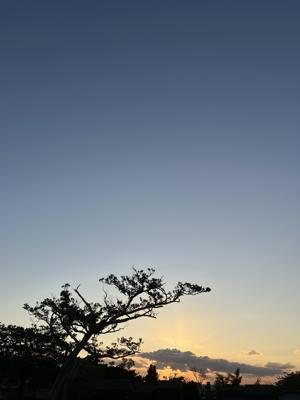
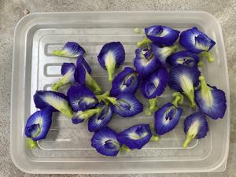
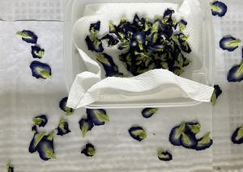
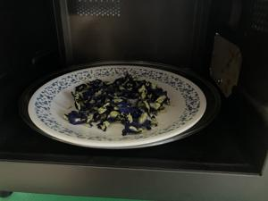
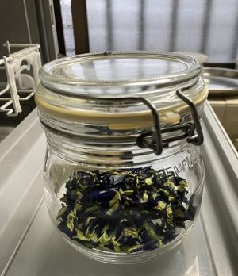
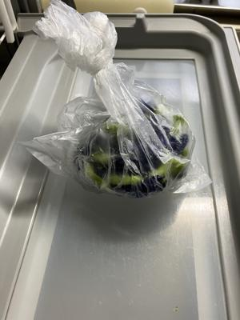
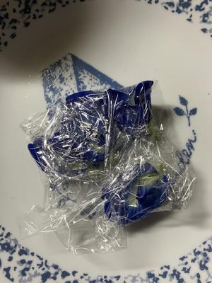
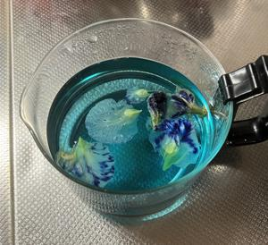
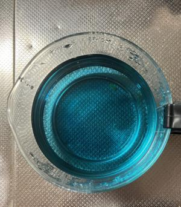

うるがいの話 ある日
最新: バタフライピーの保存【うるがいの話 ある日】とは 一日だけのプログです
『うるがいの話』の最新一日だけのプログで、通信料が少なく経済的だ。カニの画像をクリックすると全ての日付が載る『うるがいの話』サイトを表示します
|
|
【うるがいの話】 うるがい(ｳﾙｶﾞｲ urugai)とは、『もずくがに』の名前でとても大きくなります。 |
|---|---|
|
|
【カミマヤーの話】 猫のことを方言でマヤーといいます。カミマヤー（kamimayaa）とは、神の猫のことです。 |
|
【たながぁの音楽】 たながぁ（ﾀﾅｶﾞｰ tanagaa）とは手長えびのことで、何種類かあり大きいのは車 エビぐらいになります。 |

|
【ぶながぁの話】 ぶながぁ(ﾌﾞﾅｶﾞｰ bunagaa)とは、赤い髪の毛、赤い身体、そして身長は１ｍ２０ｃｍ ぐらい、川の蟹を食べているの目撃された。場所は沖縄県国頭郡大宜味村のと ある村僕の隣近所に住んでいる爺さんから、聞いた話です。 |
|
|
【ギーマの話】 ギーマ(giima)とは、山原の里山に咲くスズランに似た、 花を付けます。実は食べられます、 気が付くと口の周りが紫になっています。 |
2024年12月11日 (水）バタフライピーの保存
16:33

９月６日からバタフライピーティーの花を収集した。プログの写真から
一番古い写真は６月１８日、それ以前から花をつけているので私の家で
は６月から１１月までが、花が収集できることになる。
せっかくなので、花が採れなくなっときのための、私の花の乾燥方法方
法を載せる。
とったばかりのバタフライピーの花

自然乾燥させるため、大き目のカゴを利用する。雨の日は、カビが付き
ます。２度捨てました。雨の日は、下にある冷凍庫保存がいい。

１０日以上自然乾燥したあと、水気をとるためにレンジを使う

５００ワットで１分。蒸気を無くすため３０分程放置、そして２回程繰
り返す。
自然乾燥は、あまりできていない場合は、コゲます！！！。２回失敗し
て捨てました。

容器に乾燥剤をいれ保存します。これまでの２か月ほどで、恐らく来年
の花が咲くまでの分は、準備できたと思う。
次は、一番簡単な冷凍庫保存、ビニール袋にそのまま入れる。これだと
かさばるので、おおくは保存できない。

花のがくをとり、一回分をサランラップで包む。ビニール袋だととりだ
すとき、汚してしまう。

容器にいれる。写真は、冷凍庫のもの。乾燥したものも同じである。

容器から花をとりだした後、取り出すとき花を絞りだすと青い汁がでて
きます。

一度だけ、ヨメが飲んだみたいだが利尿効果が、あるのでヤメタ。確か
に利尿効果はスゴイので、注意が必要である。目への効果はよく分から
ない、多分あるのだろう。
ネットで、乾燥したバタフライピーの花が買えるが、ま、タダだし、自
分で作っているので安全ということで。おしまい